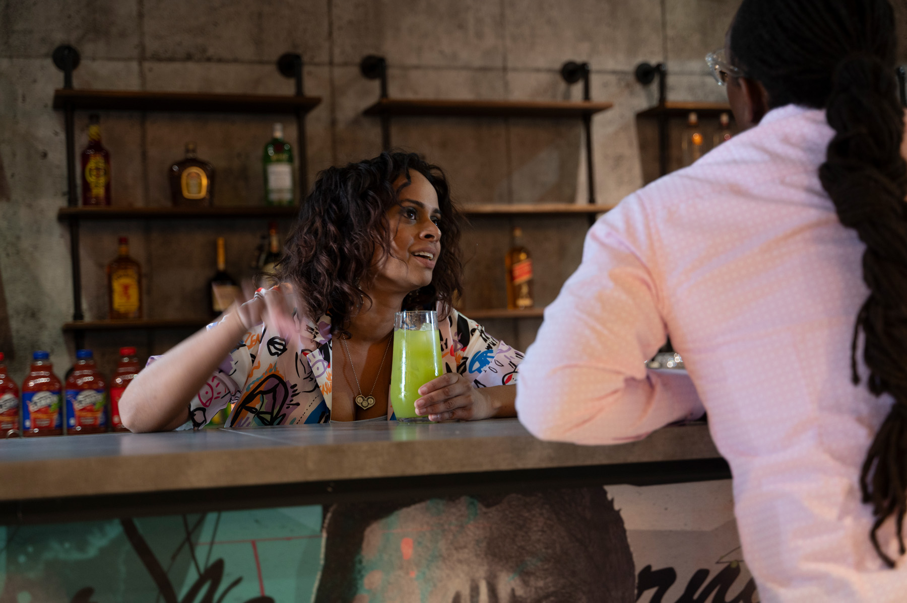
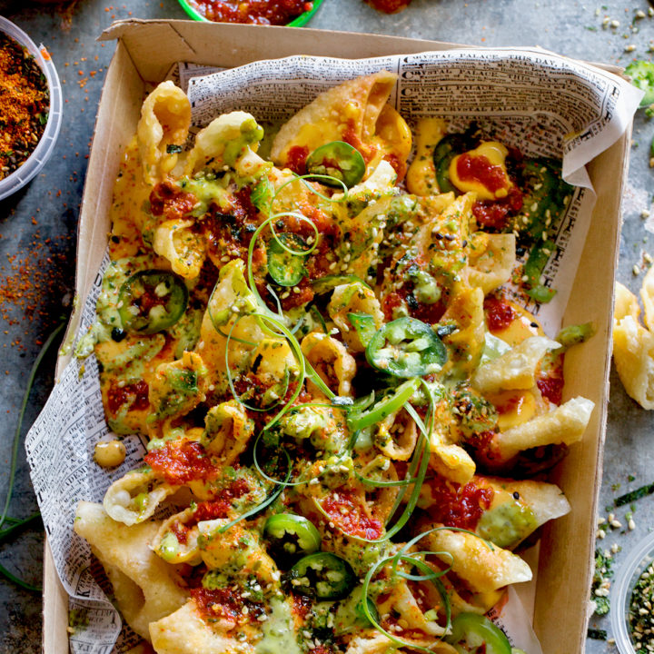
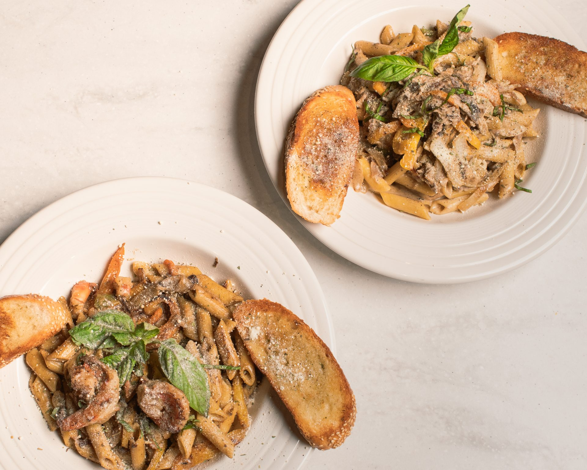
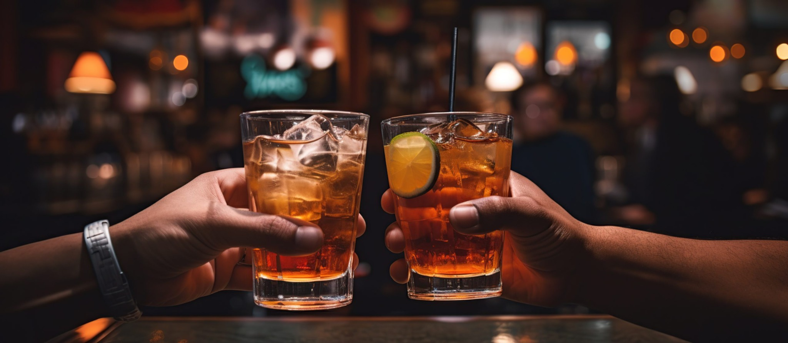
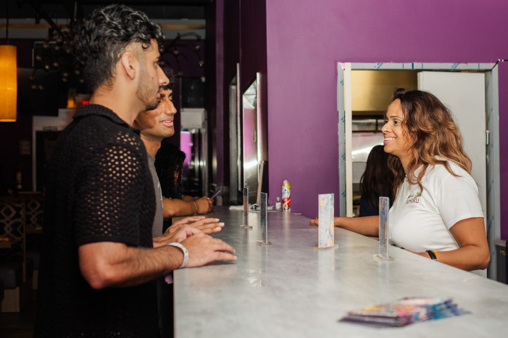
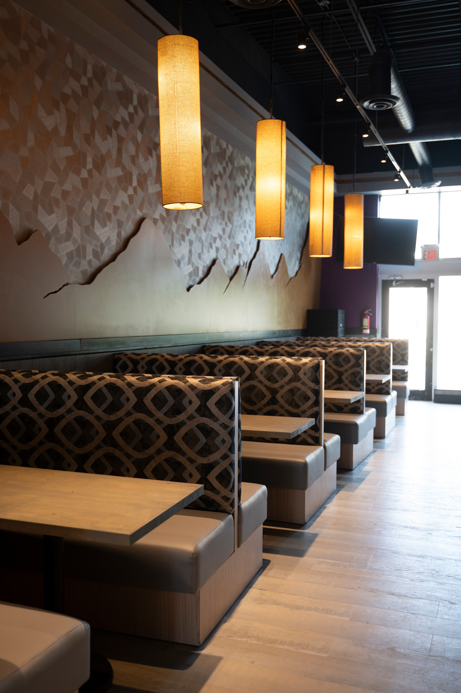
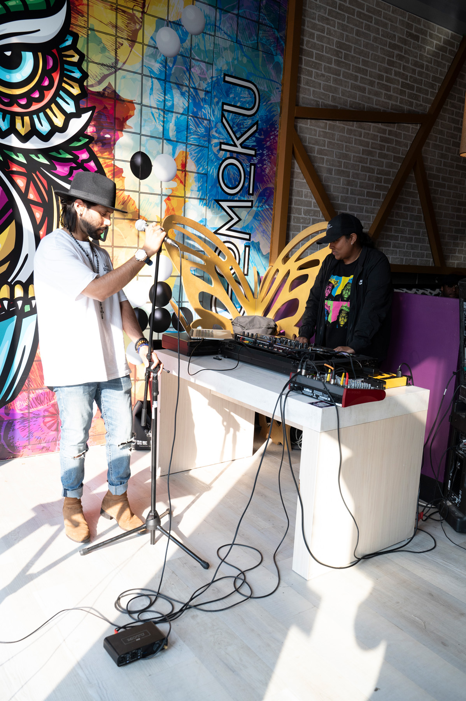
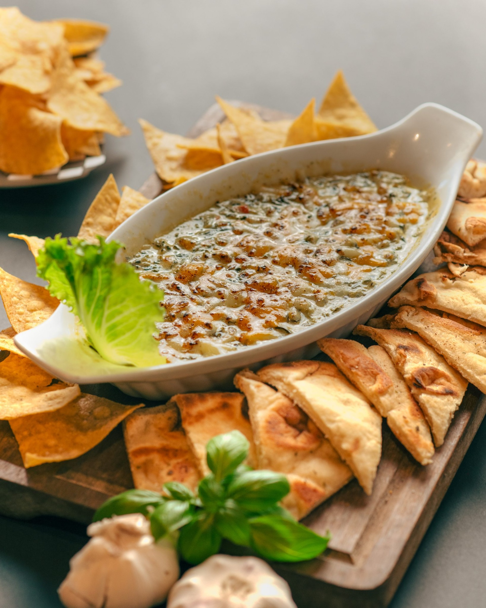

01
Identity
North Oshawa · Food · Drinks · Events
Asian-Caribbean fusion, crafted drinks, live energy and celebrations under one roof.
Phase One
This first build establishes the identity: urban, colourful, social and night-oriented—without turning Gomoku into a generic “premium restaurant.”
Identity

Space

Crunch, heat, sauce and the plate that disappears first.

Big, layered and unapologetic.

Creamy, spicy and unmistakably Gomoku.

Before the next song
Gomoku’s drinks should not sit quietly beside the food. They are part of the show, part of the atmosphere and part of what guests remember.
Explore drinks ↗
Dinner can become drinks.
And music can become a night worth remembering.
Private events
Birthdays, engagements, showers, corporate gatherings and celebrations with food, drinks, sound and room to make the event your own.

Built around the occasion, not forced from a template.
Custom cocktails and themed presentation.
Clearer coordination and less stress.
Music, visuals and a room with personality.
The people behind the mood
The team, the bar, the preparation and the small performances behind each drink help make Gomoku feel personal rather than manufactured.



Phase Two complete